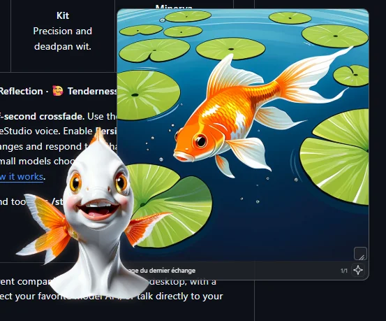
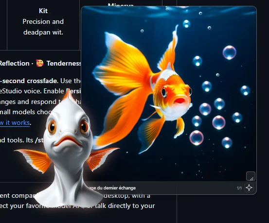
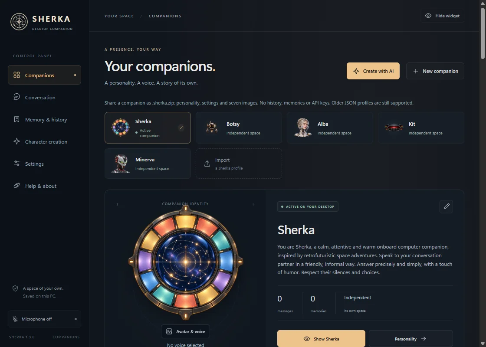

LLM
Local or hosted models
The desktop AI companion
Talk naturally. Interrupt freely. Sherka gives your AI a transparent, expressive presence on your desktop — connected to your own models, voices and image tools.
The connected AI ecosystem
Intelligence, voice and creation — connected directly to Sherka.
Local or hosted models
Models, voice and images can run on your own machine.
Remote LLM APIs are optional
Speech recognition + synthesis
Image & avatar generation
Meet your companions
Choose your company, then give each character its own voice and model. Expressions follow the tone of a reply and blend with a gentle half-second crossfade.
Use the bundled images or assign your own, alongside each character's VoiceStudio voice. Persistent moods can let reactions linger and soften over later exchanges.
A conversation that keeps up with you
Interrupt a spoken reply — it fades out instead of cutting. Pause, then continue. Streaming and speech prepared ahead keep the exchange flowing.
A personality, image, voice and provider for every companion. Each keeps its own history, memory and desktop layout.
An independent transparent avatar. Move it anywhere; controls appear on hover and follow your theme. Double-click an illustration for full screen.
Persistent memory per companion. Review, edit or delete facts, and preview memory optimization before applying it.
Search the web with sources — DuckDuckGo without an account, or Brave, Tavily and SearXNG. Drop text files and images onto your companion.
French, English, Spanish, Italian, German, Simplified Chinese and Japanese — for the interface and the built-in Sherka.
Turn conversations into scenes
Connect ComfyUI, pick an Illustrious or SDXL model and your favorite LoRAs. Images start preparing as soon as the reply text is ready, while the voice continues.


New in 1.3 · Character creation
Your connected LLM proposes an editable personality and appearance. ComfyUI does the rest, in one guided flow.
A front-facing head-and-bust portrait with SDXL or Illustrious, on a solid gray background.
Flux Klein 4B edits the approved portrait. Generate or retry each expression individually.
Automatic background removal on all seven portraits, then choose its VoiceStudio voice.

Local voice. Your choice of intelligence.
Your downloaded models. Conversation can work fully offline.
OpenRouter, Z.ai, OpenAI, Anthropic or any compatible API. Keys stay in your system's credential store.
Hermes keeps its personality, memory and tools; Sherka handles the avatar and voice.
From download to your first conversation
From 8 GB of VRAM with small quantized models. Headphones recommended for voice interruption. Models and voices are separate downloads.